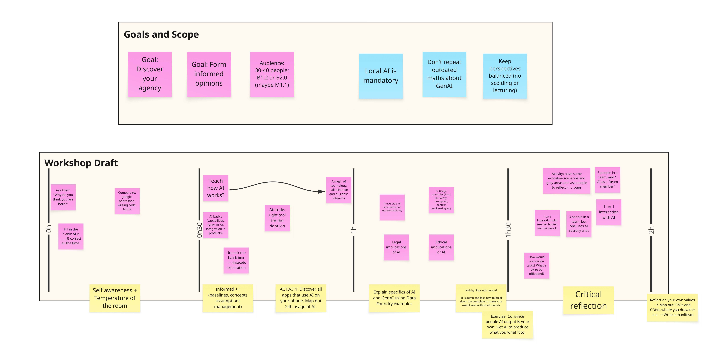

We established a rough outline of the workshop, as well as the scope and format.
Audience: Bachelor students in their first year (second semester), or in their second year (first semester).
Format: Classrooms of around 30-40 students per workshop. Duration of 2 hours.
Goals:
Principles:
How many people? What sort of activity?
The session brought together 6 educators and researchers from the TU/e, including 4 professors and 2 PhDs. The first part of the session consisted of an open brainstorm about the scope and contents of the workshop (roughly 45 min). This was followed by an activity to structure the ideas surfaced in the first part into a workshop outline (roughly 45 minutes).
Participants worked collaboratively to design the outline of an ideal introductory AI workshop for design students, debating scope, priorities, and content without starting from a pre-structured agenda. The group began by aligning on constraints and target audience (bachelor design students, ~30–40 participants, 2-hour session), then moved through a free-flowing discussion that surfaced themes around technical literacy, ethics, legal responsibility, and design ownership. Ideas were captured on sticky notes by the participants.
The second part of the session started with dividing the timeframe into four 30-minute blocks and assigning high-level goals for each section. Once again, participants moved through the discussion freely and converged on the topic and content of each block. Then, using the ideas generated before, the blocks were populated with content ranging from hands-on activities, lecture-like moments, and peer-to-peer discussions and critique.
The session produced a rough outline for a 2-hour introductory AI workshop for design students, built around four pillars:

Figure 1. Rough AI workshop plan, as an outcome of the breakout session.
The rough workshop outline is structured around four 30-minutes blocks.
The goal of the first block is to understand where the students are right now? What do they know? What correct or wrong preconceptions do they have? What is their stance on AI?
You can start by simply asking them, “Why do you think you are here?”. Participants in this session envisioned this workshop as mandatory. However, students should still reflect on why is it as such. You can also ask students to map out 24h of their normal AI use or find all apps on their phone that they think use AI.
You could also run some small “crowd interaction” activities. For example, ask students to fill in the blanks in prmots such as “AI is correct ________% of the time.” or “AI is kind of like _____ (google, photoshop, figma, coding)”. Then discuss why they filled in certain answers and what their view is at the moment.
The goal here is to teach basic concepts and get everyone on the same page in terms of how AI works. An inherent goal of this is to also instill an attitude that you need “the right tool for the right job”, rather than always jumping ot teh biggest, strongest models all the time. (Anecdotal example, make students understand you do not need Claude Opus 4.8 for grammar checks)
This part is more like a lecture and should touch upon AI capabilities (beyond GenAI), how GenAI works, what datasets are and why they are important to the way AI behaves, how do hallucinations happen, and what role do business interests play in how AI is built (for example, why it makes financial sense that LLMs are overly agreeing or always ask follow-up questions).
Potential hands-on activities could include dataset explorations or roleplaying LLMs in groups where different members generate “responses” together one “token” at a time.
Here we go into the technical backstage of AI. Explain concepts such as models, local AI (for example, using Data Foundry), AI modalities and transformations (text, image, sound), and how they can be chained. Explain the legal implications of models, hosting, local vs cloud, resource use of big vs small models, as well as the ethical implications that come with that.
Potential hands-on activities should revolve around the use of local AI and small models. Show students how a “small, dumb, yet fast” model forces you to create better prompts, break down the problem, or chain multiple models to solve a task. This can take the form of a design assignment, a writing assignment, or an exercise where you try to convince peers that something is not written by an LLM.
Lastly, once the students understand how AIs work, they should critique and reflect on practices around AI use. This is probably best done in small group discussions and exercises. One such activity could be that 3-5 people groups reflect on some evocative scenarios, going through a series of prompts and ethical questions. These scenarios should present some grey areas and setups grounded in reality, rather than extreme, obvious setups. For example, you can ask the students how they would divide tasks in a group where the AI is an active collaborator, and everyone is on board? What is ok to be offloaded and what should not be? How would they react if one member in a project were using AI without disclosing it? How about if a teacher did that?
A potential ending activity could be that each student writes their own manifesto. A small vision document where they outline different PROs and CONs of AI use. What is their stance? Where do they draw the line? (Bonus points if they write it with a pen and paper and nail it to a door)
If you have all the needed expertise in your teaching team, try taking this rough structure and shape it into a workshop you can run at the beginning of a course or project you are teaching. Then run it! Document the direction in which you take the workshop and how it is received by the students. Document whether their attitude or vision shifts after this workshop.
If you are missing some parts of the needed expertise (technical understanding of AI, access to local AI infrastructure, ethical critique expertise), reach out to a colleague who could complement your own skills.
In future sessions, we aim to improve on this structure with detailed activities, teaching material, and everything else needed to run such a workshop. Moreover, the students should be involved in these future developments as well.